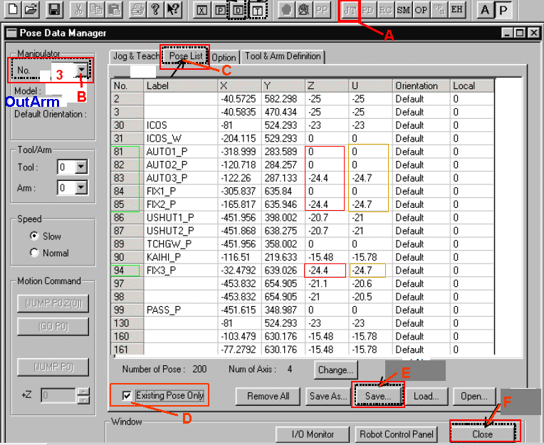
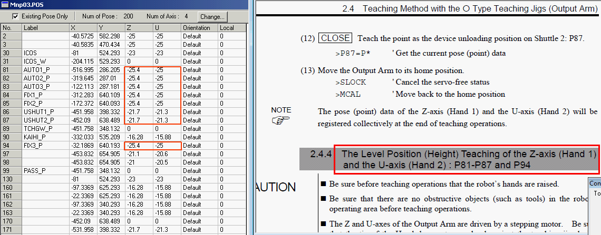

Service History
Subject: SEP NS-6040-02 After setup package 1-QFP05-100-3-2-01. – “Output Arm error code 4001” during cycling and running mode.
Handler Model: NS-6040 S/N: 15678 (NS6040-2)
Controller: SRC520 (S/N: 02087)
Date: 12 Jan 2012
Symptom
Error T-4001 is Arm reach the limit of motion range.
Line 1457, error Task 7.
Robot output arm stops/hangs at output shuttle 1 position during first pick-up.
Action
12 Jan 2012
Request customer to send Output Arm robot 3 position data (mnp03.pos) to us for analysis.
13 Jan 2012
After checking on Output Arm robot 3 position data (mnp03.pos), found some robot point Z and U are 0.
Request customer to change Z & U value of P81~P85 & P94 to Z=-20.7 & U=-21. P86 & P87 Z & U, ok.
How to manually edit the SPEL pos data but advisable to do Input/Output Hand Height teaching:
- In SPEL95, click [P] Programming Mode, prompt ” Do you wish to switch to the Programming Mode?”, click [OK] button
- Click [Abort All], prompt to abort background task, so click [Yes] button.
- (A) Click [JT] button to open “Pose Data Manager” Windows
- (B) Select “Manipulator No.” 3 for Output Arm
- (C) Click “Pose List” tab
- (D) Tick “Existing Pose Only” check box to show all pos with data
- point 81 to 85 & 94, for Z Height parameter, change to -20.7 (there is a negative sign).
- point 81 to 85 & 94, for U Height parameter, change to -21 (there is a negative sign).
- (E) Click [Save…] button to save Output Arm pos data
- (F) Click [Close]
- click [A] Auto Mode , prompt ” Do you wish to switch to the Auto Mode?”, click [OK] button


Customer informed problem solved after amend Z & U pos data.
Cause
Output Arm robot 3 position data (mnp03.pos), found some robot point Z and U are 0, causing the Output pickup hands unable to go down to pick device, resulting in T-4001 is Output Arm reach the limit of motion range.
Remarks
Same issue as 0103-NS6K.